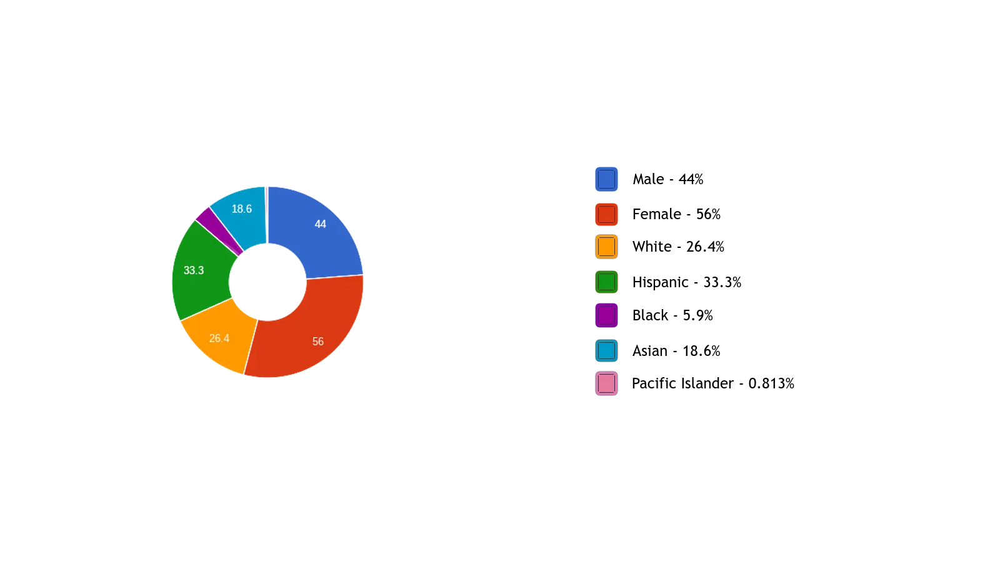

Enrollment Demographics

Mascot
Herky The Hornet

Total Number of Students
30,661 as of March 2022
Minimum G.P.A. to be admitted
A minimum of 3.0 GPA is required to be admitted
Number of Majors Offered
48 Majors are offered at this university.
3 Majors that interested me and their descriptions
Computer Engineering -> Develop Computer Systems and Other Tech
Computer Science -> Program Computer Systems and Other Tech
English -> Focuses on the English language, including its history and structure.
Highest Degree Available
The highest degree offered is a Masters Degree.
the site code kinda broke and was split into 3 different background sections. idk how to fix it